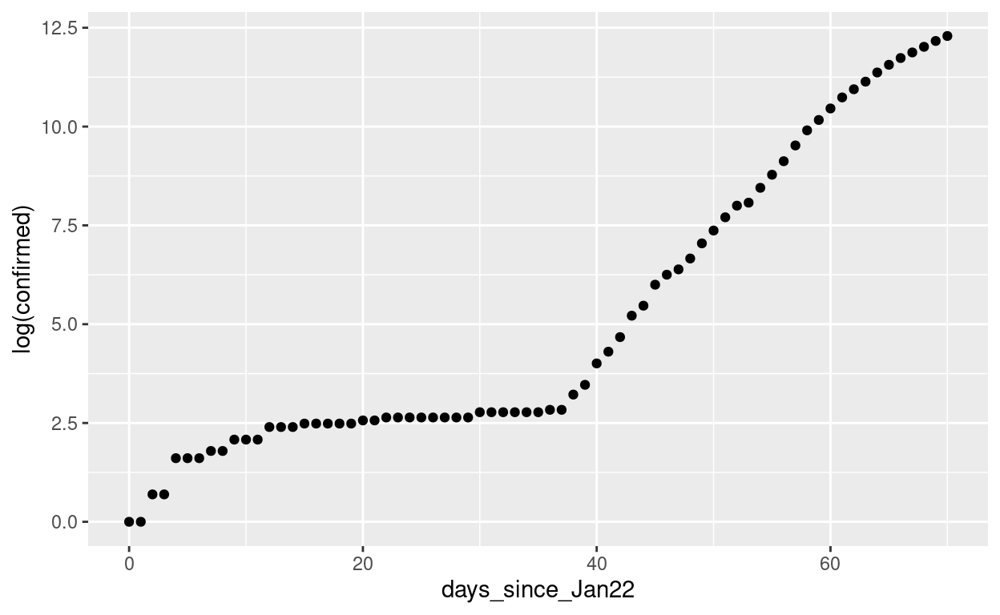
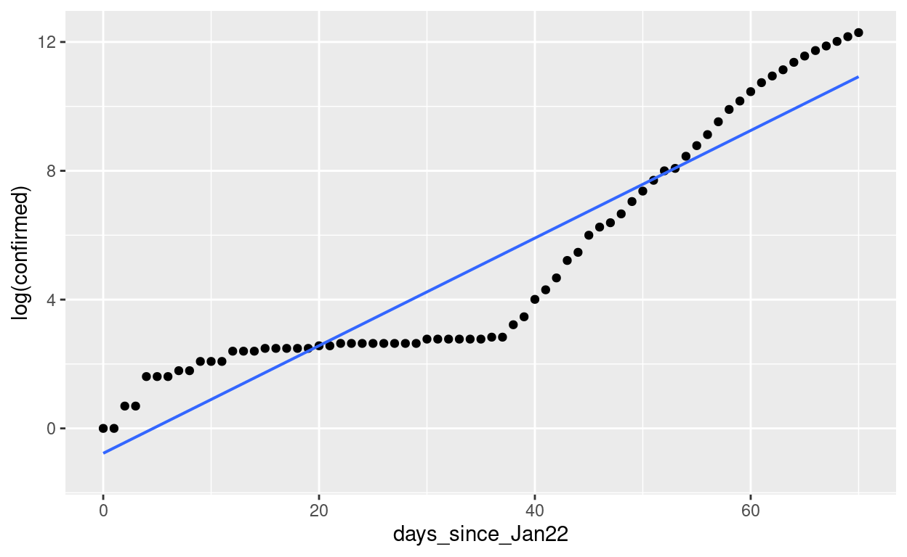
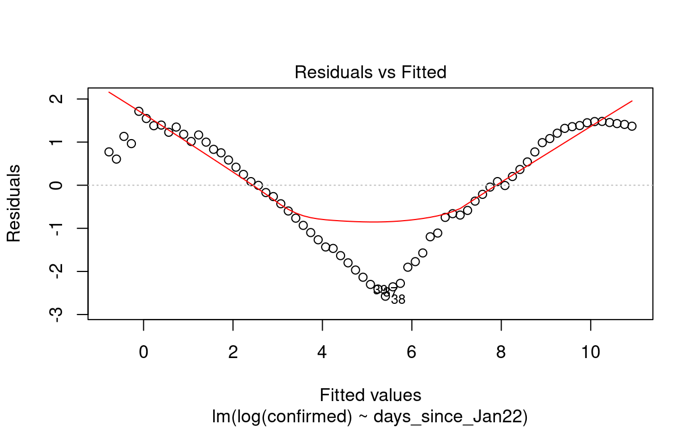
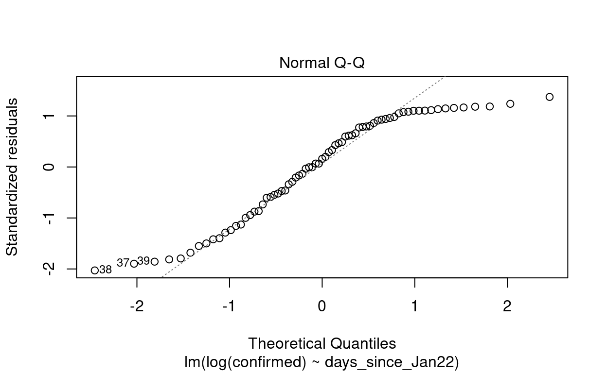
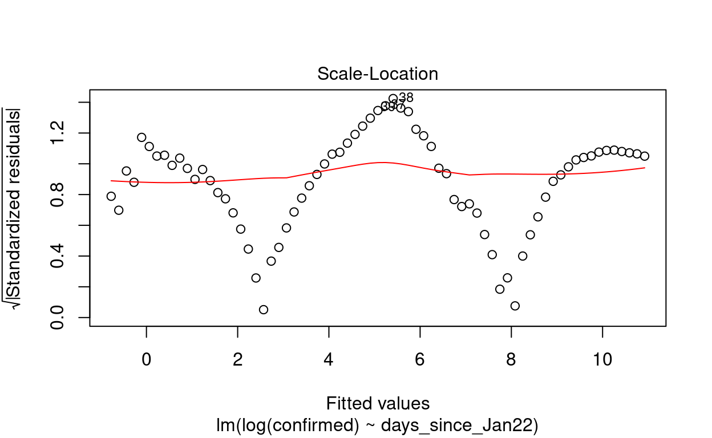
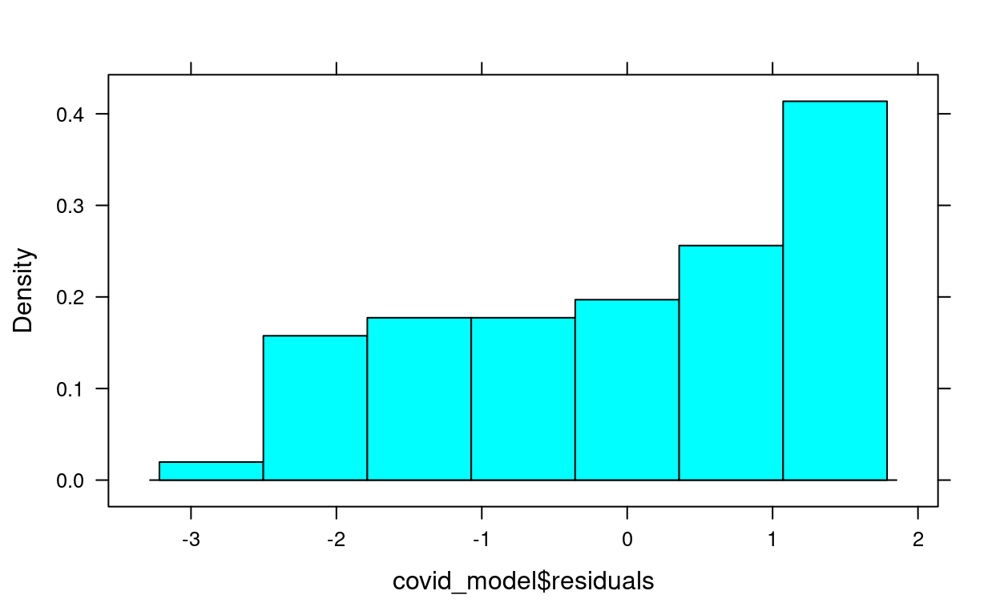
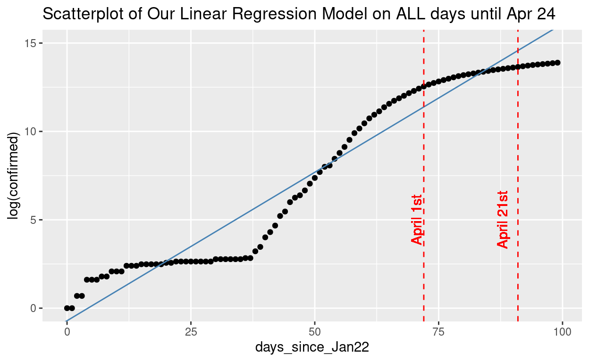
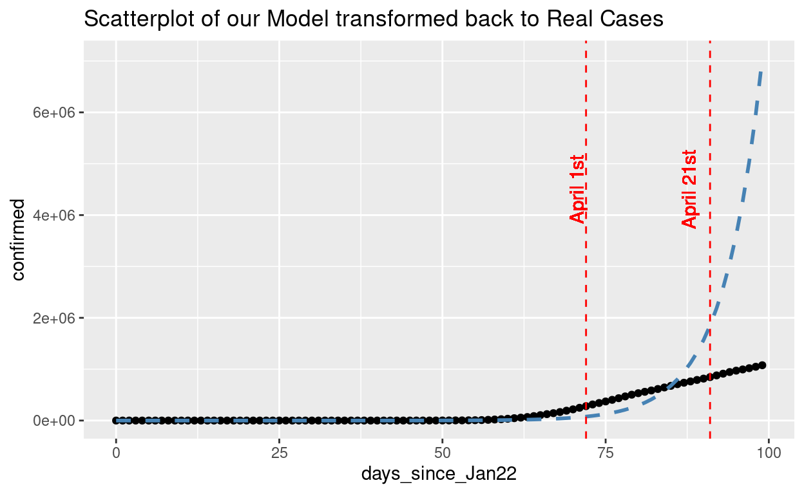

This example contains COVID-19 data, if you prefer not to think about that, we will have somewhat similar examples on a worksheet posted on Moodle. And bear with me as we only look at the data early on in the pandemic, the second and third waves don’t illustrate the point I’m trying to make.
The conditions of the model we will make are almost all violated. I want this to be an example of “bad modeling”.
The interpretations are a little complex, but try to follow along and let me know if you have questions.
I think this is a really interesting topic and the ability to model what’s happening in our world right now is very important. But the models that are useful are very complex and beyond the scope of Stat 212. That doesn’t mean that we can’t do some simple modeling (albeit, eventually incorrect modeling as mentioned above).
I also think it is really important for YOU to be able to understand some of the basic modeling for COVID-19 and question those models that you see. There are TONS of models out there, some good, and some not so good. I’d like you to have the ability to look at these models with a critical eye and make a decision yourself on how they meet conditions, or if the predictions are taking into account enough factors.
It’s important to remember a very famous (among statisticians at least) and appropriate quote, “ALL models are WRONG… but SOME models are USEFUL.” - George Box
There are many issues with the COVID data that we have and had available to us (not enough tests, unreliable results, etc). But let’s use some of the data from the US. Below is the total number of confirmed cases in the US from Jan. 22 through Mar. 31 (70 days).
Let’s consider whether we can use the date to predict the number of confirmed cases in the country.
Response: Confirmed Cases
Explanatory: Number of days since January 22
Take a look at our scatterplot
gf_point(confirmed ~ days_since_Jan22, data = confirmed_march)
Uhhhh, that doesn’t look good! It’s not linear at all! So…what, are we done? Do we quit?
NEVER!
The spread of infectious diseases like COVID-19 have what’s called an exponential growth curve. In fact, a lot of other really common numeric variables have exponential relationships, like income and housing prices. It happens when there’s a lot of really small values and only a few really large ones. Luckily, we can fix this by transforming our response variable.
Variable transformations are a common way for us to try and “force” a linear relationship. And the best way to transform exponential data is to use a log transformation (for those of you who are math majors, this transformation should make a lot of sense).
Let’s try it out by using log(confirmed) instead of the original numbers.
## The scatterplot
gf_point(log(confirmed) ~ days_since_Jan22, data = confirmed_march)
## And the correlation coefficient
cor(log(confirmed_march$confirmed), confirmed_march$days_since_Jan22)It looks much better, and the correlation is really improved. But now if we move forward with this, we NEED to remember that the response variable is transformed.
Can you:
Find the fitted model for log(confirmed) and days_since_Jan22, write out the equation, and make a new scatterplot with the regression line on it?
Test for the significance of the relationship (or you can think about it as testing days_since_Jan22 as a significant predictor of log(confirmed))?
Predict the log(confirmed) cases for day 71 (April 1st) and day 90 (April 21)?
Try to come up with a meaningful interpretation of the slope and the predictions you made?
Check the conditions for the model using the plot() function?
## Variable names are
log(confirmed)
days_since_Jan22
## Dataset name is
confirmed_marchHow did it go? The code for fitting the model and making the plots should have all been the same as the code used in the previous tutorials. The hard part is trying to explain what was going on. I will go over examples of regular linear regression as well as another example of transforming data for linear regression.
I’ll start again with the scatterplot and correlation of the transformed data.
gf_point(log(confirmed) ~ days_since_Jan22, data = confirmed_march)
cor(log(confirmed_march$confirmed), confirmed_march$days_since_Jan22)## [1] 0.9384344Next, I will fit the linear regression model, and write out the equation.
## Save the model using a unique name
covid_model <- lm(log(confirmed) ~ days_since_Jan22, data = confirmed_march)
## get the model coefficients
summary(covid_model)##
## Call:
## lm(formula = log(confirmed) ~ days_since_Jan22, data = confirmed_march)
##
## Residuals:
## Min 1Q Median 3Q Max
## -2.5754 -1.0152 0.2018 1.1741 1.7145
##
## Coefficients:
## Estimate Std. Error t value Pr(>|t|)
## (Intercept) -0.773343 0.300313 -2.575 0.0122 *
## days_since_Jan22 0.167081 0.007404 22.565 <2e-16 ***
## ---
## Signif. codes: 0 '***' 0.001 '**' 0.01 '*' 0.05 '.' 0.1 ' ' 1
##
## Residual standard error: 1.279 on 69 degrees of freedom
## Multiple R-squared: 0.8807, Adjusted R-squared: 0.8789
## F-statistic: 509.2 on 1 and 69 DF, p-value: < 2.2e-16## new scatterplot with the regression line
gf_point(log(confirmed) ~ days_since_Jan22, data = confirmed_march) %>%
gf_lm()
\[\widehat{\text{log(confirmed)}}=-0.833+0.167\cdot \text{days since Jan 22}\]
Using the summary from the model above, I can test for the significance of the slope of the model:
\(H_0: \beta_1=0;\) The number of days since January 22 is not a significant predictor of the log(confirmed) cases in the US.
\(H_a: \beta_1\ne0;\) The number of days since January 22 is a good predictor of the log(confirmed) cases in the US.
We still need to talk in terms of the transformed response variable.
| Test statistic | p-value |
|---|---|
| 22.359 | \(\approx0\) |
We have really strong evidence that the number of days since January 22 is a significant predictor of the log(confirmed) COVID-19 cases. We should have expected this, cases will increase as the days go by. I think the real potential for this model is whether it can make predictions about how many cases we should expect in the coming days.
Predict the log(confirmed) cases for 71 days and 90 days since January 22.
## I can predict two new observations at the same time by using c()
new_days <- data.frame(days_since_Jan22 = c(71,90))
## You could plug in 71 and 90 to the regression equation to get exact values
## I am going to make a prediction interval for new observations
predict(covid_model, new_days, interval = "prediction")## fit lwr upr
## 1 11.08938 8.466208 13.71255
## 2 14.26391 11.569789 16.95803So I would predict with 95% confidence that on April 1st there would be between 8.4 and 13.7 log(confirmed) cases of COVID-19. And on April 21st, I’m 95% confident that there will be between 11.5 and 16.9 log(confirmed) cases of COVID-19.
It may be hard for you to think about these numbers as meaningful. You’re not alone, as humans, we don’t think in terms of logarithms or exponentials well. It’s hard for me to know if 14 log(confirmed) cases is good or bad. We need to transform our data BACK in order for it to make sense!!
Luckily, we have a way of doing this. Remember that in order to get rid of the exponential relationship we took the log of the response variable. Now, to transform back, we can take the exponential again and get values we can actually interpret. We are taking advantage of the mathematical property of:
\[e^{log(x)}=x\]
For ALL of my interpretable values, I can take the exponential (exp()) to get the response variable back into just confirmed cases.
## My predictions - this step is only necessary if we've transformed the data
exp(predict(covid_model, new_days, interval = "prediction"))## fit lwr upr
## 1 65471.93 4751.465 902158.3
## 2 1565799.83 105851.144 23162046.4Now, this makes more sense and our model is potentially more useful. We can predict that on April 1st, we are 95% confident the number of actual confirmed cases will be between 4,420 and 887,160. And on April 21st, we are 95% confident the number of actual confirmed cases would be between 98,820 and 22,889,038.
These are the predictions our model suggests, but there seems to be a some issues:
The range of possible confirmed cases is HUGE - This often the case when we transform data, there’s a lot of uncertainty.
We are making predictions well outside of our observed data - Can we trust the predictions since we are extrapolating our model?
Check the conditions for using the model. Really we should have done this before making predictions, but I wanted to let you get some practice with reading the model summaries and making predictions.
## This gives the residual plot, Normal Q-Q plot, and Scale-Location plot
plot(covid_model, which = 1:3)
## This is the histogram of the residuals
histogram(covid_model$residuals)
Yikes! This does not look good. From our first plot (and maybe you noticed it in the scatterplot using log(confirmed)) we can see that the data are STILL not linear. Even with our log transformation, it wasn’t enough to make the data linear. Sure, it made the data look better, but it didn’t completely fix the problem. Linearity condition is VIOLATED.
Looking at the Normal Q-Q plot and the histogram, we can also see that the points on the Q-Q plot don’t follow the diagonal line very well, there is a distinct “S” pattern to the dots. And the histogram isn’t really “Normal looking”, I don’t know how I’d describe it…just not really Normal. Normality condition is VIOLATED.
For constant variance, I don’t think we necessarily have an issue, there don’t seem to be areas on the scatterplot, or residual plot, or Scale-Location plot where the range from top to bottom is drastically larger/smaller on one side or the other. Constant Variance is OK.
Finally, maybe the biggest issue we have here is the independence of observations. If each observation is another day since January 22, then hopefully it is clear that the cases are not independent. If we had 5 cases yesterday, I know that I’ll have at least 5 cases today. Independent observations condition is VIOLATED.
Linear regression, even with a transformation of data is NOT appropriate in this case. We have better ways of trying to model this type of complex data, many of which you can learn about in classes like Stat 272 - Statistical modeling.
Let’s take a look at our linear regression and prediction again with the bigger picture. We actually do know how many confirmed cases there were on April 1st and April 21st.
| Date | Predicted log(confirmed) range | Actual log(confirmed) cases | Predicted cases range | Actual confirmed cases |
|---|---|---|---|---|
| 4/1 | [8.4 - 13.7] | 12.4 | [4,420 - 887,160] | 243,622 |
| 4/21 | [11.5 - 16.9] | 13.6 | [98,820 - 22,889,038] | 811,865 |

What you can see in both the plots for the predicted log(confirmed) and actual confirmed cases is that our model underestimated the number of cases on April 1st, but overestimated the number of cases on April 21st.
Why would it do this?
One main reason is that this isn’t a true exponential curve. Human intervention and public health policies have helped slow the spread of the disease. What you see is what we could expect to happen if we did nothing (our model) and what we actually observed is the results of “flattening the curve” through social distancing practices. Which is good, because our exponential model would not be a pretty picture.
I think it is a good way to show you a common approach we use in statistics, log transformations. And beyond that, as I mentioned above, I wanted to expose you to a simplified version of many of the models you can find right now with a quick web search. And this method of looking at the data isn’t actually that far off from what is really being done to analyze COVID-19 data. You have the basics down just with the information in Ch. 5.
I hope that you were able to follow this example without too much difficulty, and I hope that it was at least somewhat interesting to you.